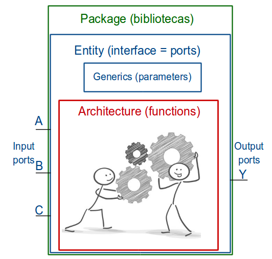
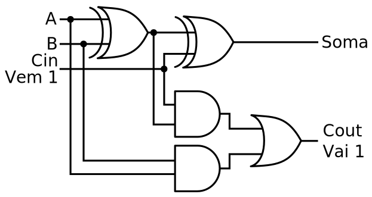

Baseado no livro Free Range VHDL, de 2013, escrito por Bryan Mealy e Fabrizio Tappero.
E nos slides do curso de VHDL da Altera.
VHDL é uma descrição, ou projeto, do hardware e não uma programação dele.
As linhas de código não são executadas sequencialmente com exeção de algumas construções da linguagem.
As linhas de código serão executadas simultaneamente.
Deve-se possuir uma visão de como o circuito final será.
Não distingue maiúscas de minúsculas (case insensitive).
Não é sensível as espaços e tabulações.
Comentários iniciam com dois hifens: "--".
O uso de parenteses nas operações é uma boa prática. Apesar de existir precedência entre as operações, o uso de parenteses aumenta a legibilidade.
Os comandos VHDL terminam com ponto e vírgula: ";".
O comando if necessita que:
Cada if tenha os seus comandos correspondentes: then e end if;.
No caso do else if, no VHDL, ele é chamado de: elsif.
Os comandos case e loop possuem um comando de término:
Os identificadores são os nomes dados às variáveis, sinais, portas, entre outros.
Eles não possuem limite de comprimento.
Esses nomes só podem utilizar uma combinação dos seguintes conjuntos de caracteres:
Letras (A-Z e a-z);
Números (0-9);
O caractere de sublinhado: "_".
Os identificadores precisam iniciar com uma letra.
Eles não podem terminar com o caractere de sublinhado.
E não podem usar dois caracteres de sublinhado consecutivos.
Existe um conjunto de palavras reservadas que não podem ser utilizadas como identificadores.
O VHDL utiliza uma abstração do tipo "caixa-preta" com uma estrutura hierárquica que permite:
Agrupar unidades funcionais básicas para criar um circuito mais complexo e:
Disponibilizar seu uso através de uma interface desse módulo;
Que esconde os detalhes do circuito que executa a funcionalidade desejada (a caixa-preta).
A cada nível hierárquico agrupam-se:
Mais módulos e cria-se um circuito cada vez mais complexo;
Que será disponibilizado, para o nível superior, através de uma nova interface de uso (ou seja, um novo módulo, mais complexo, composto de módulos mais simples).
Variar a quantidade de detalhes disponíveis a cada nível hierárquico.
Essa abordagem permite:
Reutilizar o código criado anteriormente pelos projetistas;
Facilitar a compreenção do circuito através da análise da interligação dos módulos (nomeados adequadamente). O que é mais simples do que analisar o circuito com uma grande quantidade de portas lógicas interligadas.
Os principais elementos de projeto da linguagem VHDL são:
Entidades (entity):
Arquiteturas (architecture):
Configurações (configuration):
Pacotes (package e package bodies):
O VHDL possui dois pacotes embutidos (não precisam ser declarados):
Standard;
TEXTIO.

As definições básicas da linguagem (como os tipos, as funções de conversão entre os tipos, constantes matemáticas, funções aritméticas, entre outros recursos), estão contidas nas bibliotecas.
Uma biblioteca pode conter um ou mais pacotes. O VHDL possui duas bibliotecas implícitas (não precisam ser declaradas):
Work: se refere aos módulos do projeto atual;
STD: contem os pacotes:
standard, que define os tipos: bit, boolean integer, real e time.
textio: que define as operações com arquivos.
Para adicionar uma biblioteca precisamos de dois comandos:
O library, que declara a biblioteca para ser utilizada:
path) da biblioteca.O use, que especifica o pacote e objetos que existem na biblioteca definida com library.
A biblioteca mais comum é a IEEE. E seus pacotes comumente usados são:
ieee.std_logic_1164.all
ieee.numeric_std.all
O exemplo abaixo mostra a utilização dos comandos library e use.
Os nomes entre os sinais < e >, incluindo os sinais, devem ser personalizados para a biblioteca e pacotes necessários à aplicação em desenvolvimento.
-- A library clause declares a name as a library. It
-- does not create the library; it simply forward declares it.
library <library_name>;
-- Use clauses import declarations into the current scope.
-- If more than one use clause imports the same name into the
-- the same scope, none of the names are imported.
-- Import all the declarations in a package
use <library_name>.<package_name>.all;
-- Import a specific declaration from a package
use <library_name>.<package_name>.<object_name>;
-- Import a specific entity from a library
use <library_name>.<entity_name>;
-- Import from the work library. The work library is an alias
-- for the library containing the current design unit.
use work.<package_name>.all;
-- Commonly imported packages:
-- STD_LOGIC and STD_LOGIC_VECTOR types, and relevant functions
use ieee.std_logic_1164.all;
-- SIGNED and UNSIGNED types, and relevant functions
use ieee.numeric_std.all;Todo projeto deve possuir, no mínimo, uma entidade. Toda entidade deve possuir um nome. A entidade descreve a visão externa (interface) do circuito que a utiliza.
As entidades podem ser correlacionadas com o encapsulamento de um chip, onde temos os pinos de entrada, saída e eventualmente bidirecionais.
A construção mínima da entidade deve possuir uma seção declarativa, chamada de port();. Nela são definidos os nomes dos pinos, sua direção (modo), o tipo de dados relacionado a ele e, opcionalmente, um valor de inicialização. São os sinais que os circuitos externos a essa entidade utilizam para interagir com ela.
Além da seção port(); pode existir uma seção chamada de generic();, onde são definidos parâmetros configuráveis em tempo de compilação.
Essa seção simula a passagem de argumentos que serão utilizados na compilação. Pode-se definir, por exemplo, o número de bits utilizados como entrada ou saída daquele módulo.
Em tempo de execução a parametrização não pode ser alterada, já que os circuitos foram criados durante a compilação. Lembre que estamos criando circuitos e não executando uma rotina de programa.
Os tipos de dados que existem na linguagem VHDL estão definidos em uma seção mais à frente.
Estrutura básica:
O modelo geral de uma entidade está mostrado abaixo (retirada do Quartus Prime Lite). Note que alguns trechos são opcionais, como o generic e os valores de inicialização.
entity <entity_name> is
generic
(
-- O generic é opcional.
<name> : <type> := <default_value>;
<name> : <type> := <default_value>
);
port -- O port é obrigatório e possui o objeto “signal” implícito.
(
-- Input ports
-- "in" indica que é uma porta no modo de entrada.
-- O valor de inicialização é opcional.
<name> : in <type>;
<name> : in <type> := <default_value>;
-- Inout ports
-- "inout" indica que é uma porta no modo bidirecional.
-- Não existe valor de inicialização.
<name> : inout <type>;
-- Output ports
-- "out" indica que é uma porta no modo de saída.
-- O valor de inicialização é opcional.
<name> : out <type>;
<name> : out <type> := <default_value>
-- Buffer ports
-- Similar a Out, mas permite realimentação interna.
<name> : buffer <type>;
);
end <entity_name>; -- Também pode ser utilizado: "end entity";Exemplos:
Abaixo temos um exemplo do modelo, disponível no Quartus Prime Lite, de um somador configurável através de generic:
-- Quartus Prime VHDL Template
-- Signed Adder
library ieee;
use ieee.std_logic_1164.all;
use ieee.numeric_std.all;
entity signed_adder is
generic
(
DATA_WIDTH : natural := 8
);
port
(
a : in signed ((DATA_WIDTH-1) downto 0);
b : in signed ((DATA_WIDTH-1) downto 0);
result : out signed ((DATA_WIDTH-1) downto 0)
);
end entity;
architecture rtl of signed_adder is
begin
result <= a + b;
end architecture;Na instanciação do componente existe a opção de alterar o valor do generic. Se o valor não for alterado, será criado um somador de 8 bits (como foi definido na entidade). Para saber como instanciar um módulo e alterar o generic, veja a seção sobre instanciação.
Abaixo, temos outro exemplo de entidade usando o generic. Note que é possível fazer aritmética com o valor do generic para definir a largura de dados dos ports.
-- Quartus Prime VHDL Template
-- Unsigned Multiply
library ieee;
use ieee.std_logic_1164.all;
use ieee.numeric_std.all;
entity unsigned_multiply is
generic
(
DATA_WIDTH : natural := 8
);
port
(
a : in unsigned ((DATA_WIDTH-1) downto 0);
b : in unsigned ((DATA_WIDTH-1) downto 0);
result : out unsigned ((2*DATA_WIDTH-1) downto 0)
);
end entity;
architecture rtl of unsigned_multiply is
begin
result <= a * b;
end architecture;Toda entidade deve possuir, ao menos, uma arquitetura. Ela deve descrever o funcionamento interno do circuito associado à entidade. Para uma mesma entidade, pode-se ter arquiteturas diferentes, que descrevem circuitos de forma diferente ou com funcionalidade diferente.
Uma mesma arquitetura pode ser modelada com estilos diferentes. Esses estilos são:
Um conjunto de comandos concorrentes que representam o comportamento da entidade;
Um conjunto de comandos sequenciais que representam o comportamento da entidade.
Híbrido:
Abaixo temos um modelo geral de uma arquitetura (retirada do Quartus Prime Lite). Note que existem vários comandos opcionais.
-- Library Clause(s) (optional)
-- Use Clause(s) (optional)
architecture <arch_name> of <entity_name> is
-- Área reservada para declarações.
-- Declarations (optional)
begin
-- Descrição do funcionamento do circuito.
-- Pode utilizar os seguintes comandos:
-- Process Statement (optional) -- podem existir vários
-- Concurrent Procedure Call (optional)
-- Concurrent Signal Assignment (optional)
-- Conditional Signal Assignment (optional)
-- Selected Signal Assignment (optional)
-- Component Instantiation Statement (optional)
-- Generate Statement (optional)
end architecture;Entre a definição da arquitetura e o begin, temos a área reservada para declarações (caso existam).
Em seguida, entre o begin e o end, temos a área reservada para a descrição do funcionamento do circuito.
Os detalhes sobre os grupos de declarações, que podem ser utilizados na descrição do funcionamento, está disponível na seção Paradigma de Programação VHDL.
Exemplos:
Abaixo temos uma entidade com 2 pinos de entrada e um de saída. Note que essa entidade pode ser utilizada com diferentes funções: AND, OR e XOR. A arquitetura a ser utilizada pode ser configurada com o comando configuration ou no momento da instaciação.
-- Quartus Prime VHDL Template
-- Configurable gate architecture
library ieee;
use ieee.std_logic_1164.all;
entity configurable_gate is
port
(
i1 : in std_logic;
i2 : in std_logic;
o1 : out std_logic
);
end configurable_gate;
-- Three possible architectures
architecture and_gate of configurable_gate is
begin
o1 <= i1 AND i2;
end and_gate;
architecture or_gate of configurable_gate is
begin
o1 <= i1 OR i2;
end or_gate;
architecture xor_gate of configurable_gate is
begin
o1 <= i1 XOR i2;
end xor_gate;Em VHDL, os objetos são uma representação abstrata de dados armazenados. Existem quatro classes de objetos:
A classe variable é usada para armazenar informações locais:
A classe constant é similar a uma variable mas seu valor é imutável após a atribuição inicial.
A classe signal é usada para transferir valores entre os elementos do projeto ou para fora deste (como um fio):
processque a contem.A classe file é usada para armazenar dados de forma persistente:
Ao criar os objetos dessas classes, deve-se associar cada objeto a um tipo de dados. A sintaxe geral é vista abaixo:
Existe uma excessão a essa sintaxe. Ela ocorre dentro da entidade, onde a definição do port não define o seu objeto. Nesse caso, o objeto signal está implícito.
É obrigatório declarar um objeto do tipo signal ou variable antes de usá-los:
Os sinais são declarados no topo do corpo da arquitetura, logo antes do begin;
As variáveis devem ser declaradas dentro do process.
Sinais declarados na arquitetura são chamados de sinais intermediários e não possuem declaração de modo (in, out ou inout).
A atribuição de um novo valor a um objeto signal deve ser feita com o operador de atribuição, que possui um process implicito:
Para um objeto do tipo variable, deve-se utilizar outro operador de atribuição:
As atribuições podem ser por agregados:
constant valeZero : BIT := ‘0’;
constant valeUm : BIT := ‘1’;
vetor1, vetor2, vetor3 : OUT bit_vector(4 downto 0);
Vetor1 <= “01011”; -- Atribuição direta
vetor2 <= valeZero & "01" & vetor1(2) & valeUm; -- Concatenação
vetor3 (4 downto 2) <= “010”; -- Atribuição parcial
vetor3 (1 downto 0) <= vetor1 (2 TO 3); -- Atribuição parcial
vetor1 <= (‘0’,’1’,’0’,’1’,’1’); -- Atribuição agregados posicional
vetor2 <= (1 => ‘1’, OTHERS => ‘0’); -- Atribuição agregados posicional e valor padrão para o restante
vetor3 <= (valeZero, vetor2(3), valeUm OR vetor1(0), ‘0’, ’0’);
vetor2 (4 downto 3 => “00”, 1 => ‘1’, OTHERS => ‘0’);A diferença entre variables e signals está no momento da mudança de seu valor.
Uma variável muda seu valor logo após a atribuição ser executada, estando disponível para o comando da próxima linha.
Ao contrário, um sinal só muda o seu valor após o término do process em que houve a atribuição. Ou seja, seu novo valor só estará disponível para o código na linha seguinte ao end process. Lembrando que a atribuição em trechos concorrentes está automaticamente embutida em um process e sua disponibilidade será para o fim do process, ou seja, para a próxima linha.
A variável representa informação local e só pode ser usada dentro de código sequencial (dentro da construção process). Ela é geralmente utilizada para descrever o comportamento.
A transferência do valor de uma variável para fora de seu módulo não pode ser feita diretamente. É necessário, primeiro, atribuí-la a um signal.
A visibilidade desses objetos está relacionada ao lugar onde eles foram declarados:
Declarações feitas dentro de um pacote:
Declarações feitas dentro de uma entidade:
Declarações feitas dentro de uma arquitetura:
Declarações feitas dentro de um processo:
O VHDL é uma linguagem fortemente tipada e nela existem três categorias de tipos de dados:
Tipos escalares (scalar): seus valores possuem uma ordem sequencial.
Tipos compostos: podem ser compostos de elementos:
de um único tipo, caracterizando um arranjo (array type);
de tipos diferentes, caracterizando um registro (record type).
Tipos de acesso: permitem o acesso a objetos de um dado tipo através de ponteiros (pointers).
Cada tipo de dados define:
Um conjunto de valores que esses objetos podem assumir;
E um conjunto de operações que podem ser executadas com os objetos desse tipo.
Ou seja, um objeto de certo tipo não pode receber valores de outro tipo de objeto:
Além dos tipos de dados predefinidos, o programador pode criar novos tipos e subtipos de dados. Em geral, esses novos tipos estão disponíveis em pacotes ou bibliotecas VHDL.
O pacote standard da biblioteca std, que é incluído por padrão, possui os seguintes tipos predefinidos:
bit: é um tipo com dois valores ('0' ou '1').bit_vector: um array de bit. No seu lugar, é mais usado o std_logic_vector.boolean: um tipo enumerado com dois valores (true ou false).integer: valores decimais inteiros, tanto positivos quanto negativos.natural: é um subtipo de integer onde não existem os números negativos.positive: é um subtipo de integer onde não existe o zero e os números negativos.integer_vector: é um vetor composto somente com tipos integer.character: é um tipo enumerado com 256 símbolos.string: é um vetor composto somente com tipos character.real: valores decimais fracionários.time: valores inteiros definindo unidades de tempo.A biblioteca do IEEE possui o pacote O tipo std_logic_1164, que define os tipos:
std_logic: tipo resolvido que possui 9 valores. Suporta múltiplos sinais acionando um único sinal;std_logic_vector: é um vetor composto somente com tipos std_logic.std_ulogic: possui os mesmos 9 valores, porém não é resolvido. Não suporta múltiplos sinais acionando um único sinal, ocorrerá um erro.std_ulogic_vector: é um vetor composto somente com tipos std_ulogic.O uso do tipo std_logic suplantou o tipo bit.
type my_count is range 0 to 100; -- user-defined type
constant max_count : my_count := 31; -- user-defined constant
signal tmp_sclk : std_logic; -- intermediate signalÉ formado por uma faixa de valores definida pelo usuário. TYPE
type estado is (ST0,ST1,ST2,ST3);O tipo std_logic é um tipo enumerado, como mostra a sua definição:
type std_logic is ( 'U', -- uninitialised
'X', -- forcing unknown
'0', -- forcing 0
'1', -- forcing 1
'Z', -- high impedance
'W', -- weak unknown
'L', -- weak 0
'H', -- weak 1
'-' -- unspecified (do not care)
);Isso permite que ele cubra situações, durante as simulações, onde dois sinais, um com nível lógico alto e outro com nível baixo, excitem uma entrada. O resultado é obtido através de uma tabela de resolução:
| U | X | 0 | 1 | Z | W | L | H | '--' | ||
|---|---|---|---|---|---|---|---|---|---|---|
| 'U' | 'U' | 'U' | 'U' | 'U' | 'U' | 'U' | 'U' | 'U' | -- | U |
| 'U' | 'X' | 'X' | 'X' | 'X' | 'X' | 'X' | 'X' | 'X' | -- | X |
| 'U' | 'X' | '0' | 'X' | '0' | '0' | '0' | '0' | 'X' | -- | 0 |
| 'U' | 'X' | 'X' | '1' | '1' | '1' | '1' | '1' | 'X' | -- | 1 |
| 'U' | 'X' | '0' | '1' | 'Z' | 'W' | 'L' | 'H' | 'X' | -- | Z |
| 'U' | 'X' | '0' | '1' | 'W' | 'W' | 'W' | 'W' | 'X' | -- | W |
| 'U' | 'X' | '0' | '1' | 'L' | 'W' | 'L' | 'W' | 'X' | -- | L |
| 'U' | 'X' | '0' | '1' | 'H' | 'W' | 'W' | 'H' | 'X' | -- | H |
| 'U' | 'X' | 'X' | 'X' | 'X' | 'X' | 'X' | 'X' | 'X' | -- | '--' |
Subtipos são tipos predefinidos:
Aos quais é aplicada uma restrição de faixa de valores;
Qualquer atribuição de valor, fora dessa faixa, gera um erro.
SUBTYPE <name> IS <base type> RANGE <user range>;
SUBTYPE first_ten IS integer RANGE 1 to 10;
SUBTYPE byte IS bit_vector(7 downto 0); -- little endian
SUBTYPE byte IS bit_vector(0 to 7); -- big endianComo o VHDL é uma linguagem fortemente tipada, para fazer operações com objetos de diferentes tipos, temos que fazer a conversão de tipos desses objetos. Ela pode ser feita através de type cast ou através de funções de conversão. A figura abaixo mostra as formas de fazer as conversões e os casos em que aplicamos cada uma.
O uso de um vetor, como o std_logic_vector, não define o significado de seus componentes. Ou seja, ele só define que existe um grupo de sinais juntos. Dessa forma, para fazer operações com esses vetores é necessário convertê-los em tipos com ou sem sinal (signed, unsigned, ou integer). Essa conversão permite que o grupo de bits seja entendido como números e seja possível fazer cálculos com os mesmos.
Um bom exemplo é a descrição de um contador, onde não se pode incrementar um sinal std_logic_vector. É preciso convertê-lo primeiro em signed, unsiged ou integer, fazer o incremento e se for o caso, convertê-lo novamente para std_logic_vector. Isso pode ser visto no trecho de código abaixo:
library IEEE;
use IEEE.std_logic_1164.all;
use ieee.numeric_std.all
signal val1, val2 : std_logic_vector( 31 downto 0 );
-- Incorreto:
val2 <= val1 + 1;
-- Correto:
val2 <= std_logic_vector( unsigned(val1) + 1 );Para fazer cálculos com tipos signed ou unsigned é necessário utilizar o pacote padronizado pelo IEEE: numeric_std. Por questões de compatibilidade, é preferível usar as bibliotecas e pacotes padronizados pelo IEEE.
A Synopsys possui bibliotecas que não são padronizadas, apesar da sua popularidade. O seu uso deve ser evitado. Elas são:
std_logic_signed;
std_logic_unsigned;
std_logic_arith.
Atributos de sinais:
sinal‘delayed(
sinal‘stable(
sinal‘quiet(
sinal‘last_value – Valor do sinal sinal antes da última variação/mudança
sinal‘last_event – Instante no qual o sinal sinal sofreu alteração pela última vez
sinal‘last_active – Instante no qual o sinal esteve ativo na última vez
sinal‘event – True se um evento ocorreu no sinal sinal no ciclo corrente
sinal‘active – True se o sinal sinal está ativo no ciclo corrente
sinal‘transaction – Valor de bit alterado a cada vez que o sinal sinal sofre alterações
Atributos de escalares:
sinal’left – primeiro (mais a esquerda) valor em sinal
sinal’right – último (mais a direita) valor em sinal
sinal’low – menor valor em sinal
sinal’high – maior valor em sinal
sinal’ascending – True se sinal está em uma faixa ascendente, False caso contrário
sinal’image(x) – string representando o valor de x
sinal’value(s) – o valor em
Aplicados apenas a tipos discretos ou físicos:
sinal‘pos(x) – número da posição x em sinal;
sinal‘val(n) – valor contido na posição "n" do sinal.
sinal‘succ(x) – valor em sinal na posição um a mais que a de x
sinal‘pred(x) – valor em sinal na posição um a menos que a de x
sinal‘leftof(x) – valor em sinal na posição um a esquerda de x
sinal‘rightof(x) – valor em sinal na posição um a direita de x
Atributos de vetores:
sinal‘left(N) – Limite esquerdo da faixa de dimensão N do sinal sinal
sinal‘right(N) – Limite direito da faixa de dimensão N do sinal sinal
sinal‘low(N) – Limite inferior da faixa de dimensão N do sinal sinal
sinal‘high(N) – Limite superior da faixa de dimensão N do sinal sinal
sinal‘range(N) – Faixa do índice de dimensão N do sinal sinal
sinal‘reverse_range(N) – Reverso do índice de dimensão N do sinal sinal
sinal‘length(N) – Comprimento do índice de dimensão N do sinal sinal
sinal‘ascending(N) – True se faixa do indice de dimensão N de sinal está em uma faixa acendente, Falso caso contrário
sinal‘element(N) – Elemento subtipo de sinal
A grande diferença entre o VHDL e as linguagens de programação:
O VHDL descreve um circuito digital:
As linguagens de programação possuem comandos que serão executados pelo processador:
As declarações concorrentes descrevem os circuitos que trabalham em paralelo, ou seja, como nos circuitos combinacionais.
Nesses circuitos, uma mudança em qualquer das suas entradas poderá alterar a sua saída depois de um certo tempo de propagação. Um exemplo é o somador completo:

Uma possível descrição em VHDL está abaixo:
library IEEE;
use IEEE.std_logic_1164.all;
entity fullAdder is
port ( A, B, Cin : in std_logic;
Soma, Cout : out std_logic
);
end entity;
architecture fluxo of fullAdder is
signal AB : std_logic;
begin
AB <= A XOR B;
Soma <= AB XOR Cin;
Cout <= (A AND B) OR (AB AND Cin);
end architecture;Essa descrição é equivalente à que se segue:
library IEEE;
use IEEE.std_logic_1164.all;
entity fullAdder is
port ( A, B, Cin : in std_logic;
Soma, Cout : out std_logic
);
end entity;
architecture fluxo of fullAdder is
signal AB : std_logic;
begin
Cout <= (A AND B) OR (AB AND Cin);
Soma <= AB XOR Cin;
AB <= A XOR B;
end architecture;Ou seja, a ordem das atribuições não tem influencia no resultado já que todas são executadas concorrentemente.
signal)Para distinguir das linguagens de programação, o VHDL utiliza um operador de atribuição com dois caracteres: "<=".
Seu nome é signal assignment. Ele indica uma relação entre sinais, mais especificamente, que o sinal à esquerda do operador depende dos sinais à direita deste.
Esse operador pode ser utilizado em quatro tipos diferentes de construções:
Atribuição Concorrente de Sinais;
Atribuição Condicional de Sinais: WHEN;
Atribuição Seletiva de Sinais: WITH SELECT;
Declaração de Processo: PROCESS.
signal)Como visto anteriormente, essa atribuição possui a seguinte sintaxe:
<target> <= <expression>;when)É utilizada quando existe somente um objeto que receberá a atribuição de uma expressão quando a condição especificada for verdadeira.
As condições são avaliadas sequencialmente até que encontre o primeiro resultado verdadeiro. Nesse caso, a expressão referente a essa condição será avaliada e atribuída ao objeto.
Essa construção possui somente uma atribuição que será e
A sua sintaxe está mostrada abaixo:
<target> <= <expression> when <condition> else
<expression> when <condition> else
<expression>;O exemplo abaixo é um MUX de quatro entradas de um bit e uma saída.
library IEEE;
use IEEE.std_logic_1164.all;
entity my_4t1_mux is
port(D3, D2, D1, D0 : in std_logic;
SEL: in std_logic_vector(1 downto 0);
Y : out std_logic
);
end entity;
architecture mux4t1 of my_4t1_mux is
begin
Y <= D3 when (SEL = "11") else
D2 when (SEL = "10") else
D1 when (SEL = "01") else
D0 when (SEL = "00") else
'0';
end architecture;O último else aceita qualquer condição que não foi definida anteriormente, evitando a implementação de latchs.
with select)Esta atribuição possui somente uma expressão de escolha a ser avaliada.
Nesta atribuição é considerado boa prática a inclusão de todos os casos esperados na expressão de escolha. E, ao final, adicionar a cláusula when others.
A sua sintaxe está mostrada abaixo:
with <choose_expression> select
target <= <expression> when <choices>,
<expression> when <choices>;Para efeito de comparação, o exemplo abaixo é um MUX de quatro entradas de um bit e uma saída.
library IEEE;
use IEEE.std_logic_1164.all;
entity my_4t1_mux is
port (D3, D2, D1, D0 : in std_logic;
SEL : in std_logic_vector(1 downto 0);
Y : out std_logic
);
end entity;
architecture mux4t1_2 of my_4t1_mux is
begin
with SEL select
Y <= D3 when "11",
D2 when "10",
D1 when "01",
D0 when "00",
'0' when others;
end architecture;Está incluído em <choices> a opção "others", que aceita qualquer condição que não foi definida anteriormente, evitando a implementação de latchs.
process)Sempre que for necessário um ambiente de execução sequencial, onde as linhas de código são executadas uma após a outra (como em C ou Java), é necessário utilizar a construção process.
Dentro de um processo, todas as instruções são executadas sequencialmente de cima para baixo. No entanto, o processo em si será executado simultaneamente com o resto do código.
No exemplo abaixo, a execução do process e a atribuição ao port G não são executadas sequencialmente. Eles são executados concorrentemente (tudo ao mesmo tempo).
library ieee;
use ieee.std_logic_1164.all;
entity circuitoExemplo is
port (
A,B,C : in std_logic;
F, G : out std_logic
);
end entity;
architecture nome of circuitoExemplo is
signal sig_1 : std_logic;
begin
process (a,b,c) is -- Este process é executado em paralelo com a atribuição ao G.
variable var_1 : integer;
begin -- Daqui até o "end process", a execução é sequencial.
F <= not (A and B and C);
sig_1 <= A;
var_1 := 34; -- esta atribuição é imediata.
end process; -- Fim do trecho sequencial.
G <= not (A and B); -- Esta atribuição é executada em paralelo com o process.
end architecture;Falta Completar
Falta Completar
Falta Completar
| Operador | Nome | Teste Executado | ||
|---|---|---|---|---|
| = | equivalência | os valores são equivalentes? | ||
| /= | não equivalência | os valores não são equivalentes? | ||
| < | menor que | o valor da esquerda é menor? | ||
| <= | menor que ou igual | o valor da esquerda é menor ou igual? | ||
| > | maior que | o valor da esquerda é maior? | ||
| >= | maior que ou igual | o valor da esquerda é maior ou igual? |
Falta Completar com Desenhos
| Operador | Nome | Função | Exemplo | Resultado |
|---|---|---|---|---|
| Lógico | sll | deslocamento lógico para a esquerda | resultado <= ”10010101” sll 2 | ”01010100” |
| srl | deslocamento lógico para a direita | resultado <= ”10010101” srl 3 | ”00010010” | |
| Aritmético | sla | deslocamento aritmético para a esquerda | resultado <= ”10010101” sla 3 | ”10101111” |
| sra | deslocamento aritmético para a direita | resultado <= ”10010101” sra 2 | ”11100101” | |
| Rotação | rol | rotação para a esquerda | resultado <= ”101000” rol 2 | ”100010” |
| ror | rotação para a direita | resultado <= ”101001” ror 2 | ”011010” |
others)Falta Completar
signal A_val, B_val : std_logic_vector(3 downto 0);
signal C_val : std_logic_vector(5 downto 0);
signal D_val : std_logic_vector(7 downto 0);
------
C_val <= A_val & "00";
C_val <= "11" & B_val;
C_val <= '1' & A_val & '0';
D_val <= "0001" & C_val(3 downto 0);
D_val <= A_val & B_val;| Operador | Nome | Comentário | |||
|---|---|---|---|---|---|
| Adição | + | adição | |||
| - | subtração | ||||
| Unário | + | identidade | |||
| - | negação | ||||
| * | multiplicação | ||||
| Multiplicação | / | divisão | comumente limitado a potência de 2 | ||
| mod | módulo | somente para tipos específicos | |||
| rem | resto | somente para tipos específicos | |||
| ** | exponenciação | comumente limitado a potência de 2 | |||
| Outros | abs | valor absoluto | |||
| & | concatenação | somente para tipos específicos |
Falta Completar
Elementos de armazenamento em VHDL são inferidos pela ausência da especificação do valor de saída para qualquer, possível, condição de entrada.
A geração não intencional de elementos de armazenamento geralmente é listada pelo sintetizador como geração de latch. Mais uma vez, os latchs são geradas quando há pelo menos uma condição de entrada que não possui uma especificação de saída correspondente.
Os elementos de memória podem ser induzidos tanto:
No estilo de modelagem por fluxo de dados;
Quanto no estilo de modelagem comportamental.
Se um sinal for declarado na entidade como sendo de saída (out), ele não poderá aparecer no lado direito de um operador de atribuição de signal. Esta limitação pode ser contornada usando-se signals intermediários para quaisquer atribuições funcionais. Em seguida, atribui-se o signal intermediário ao signal de saída (uma atribuição concorrente).
A especificação de modo de buffer deve ser evitada. Em seu lugar pode-se utilizar a declaração de signals intermediários.
Falta Completar
O estilo comportamental não fornece detalhes sobre como o projeto é implementado no hardware. Ele define como as saídas do circuito reagem às entradas e suas variações. Assim, os detalhes da implementação do circuito são deixados aos cuidados da ferramenta de síntese.
A modelagem comportamental está em um nível de abstração acima da modelagem de fluxo de dados. Pode-se dizer que a modelagem comportamental, no projeto de circuitos, é a própria abordagem "caixa-preta".
A modelagem comportamental se baseia na declaração do processo (process), que é um tipo de declaração simultânea que executa o seu conteúdo de forma sequencial.
A principal diferença entre process e as outras três declarações concorrentes está na abordagem da concorrência que o processo usa.
Falta Completar
Esse estilo de arquitetura especifica um circuito como uma representação simultânea do fluxo de dados através do circuito.
Na abordagem de fluxo de dados, os circuitos são descritos mostrando as relações de entrada e saída entre os vários componentes internos do VHDL. Esses componentes incluem operadores como AND, OR, XOR, etc.
Os modelos em estilo de fluxo de dados, por definição, usam as seguintes atribuições:
Atribuição concorrente de sinal;
Atribuição condicional de sinal;
Atribuição seletiva de sinal.
Se o seu modelo usou exclusivamente essas três instruções de atribuição de sinal, ele é um modelo de fluxo de dados.
O estilo de arquitetura descrita através de fluxo de dados tem pontos fortes e pontos fracos:
É possível ver o fluxo de dados no circuito examinando o código VHDL.
Estimar como a lógica real será após a síntese do circuito.
Funciona bem para circuitos pequenos e relativamente simples.
Para circuitos mais complicados é vantajoso usar o estilo comportamental.
O exemplo abaixo é uma modelagem no estilo fluxo de dados.
entity AND2 is
port (
X, Y : in BIT;
Z : out BIT
);
end entity;
architecture FluxoDados of AND2 is
begin
Z <= X AND Y;
end architecture;Em VHDL, a modularidade é conseguida através do uso de pacotes (packages), componentes (components) e funções (functions). A seguir, veremos como usar os componentes.
A abordagem para usar um componente no VHDL é:
Nomeie o módulo que você planeja descrever (a entidade);
Descreva o que o módulo fará (a arquitetura);
Deixe o programa saber que o módulo existe e pode ser usado (declaração do componente);
Use o módulo em seu código, fazendo a instanciação do componente e o mapeamento.

Modelagem Estrutural
Instanciação Direta
Quando for instanciar um componente, do seu próprio projeto, é possível usar a instanciação direta - sem a declaração do componente.
<instance_name>: entity <library>.<entity_name>
generic map
(
<name> => <value>,
...
)
port map
(
<formal_input> => <expression>,
<formal_output> => <signal>,
<formal_inout> => <signal>,
...
);A biblioteca do projeto sempre tem o nome work.
O port map pode ser feito de duas formas:
Posicional:
Nominal:
Para evitar os erros comuns na conexão do port map, utiliza-se uma sintaxe que não depende da ordem original dos ports.
Em qualquer ordem, os ports são conectados com uma atribuição usando o nome de cada um deles, como mostrado a seguir.
<formal_input> => <expression>
<formal_output> => <signal>A etiqueta formal_input ou formal_output será substituída pelo nome original do port do componente que está sendo instanciado. Ela deve ser seguida pelo símbolo de atribuição (=>).
Do lado direito do símbolo de atribuição, colocamos o nome da expressão, ou sinal, pertencente a um recurso existente no arquivo local que será conectado ao port do componente instanciado. Como são definidos os nomes dos dois recursos utilizados, o local e o instanciado, a sequência das declarações não importa.
Instanciação Usando component
Ao invés de fazer a instanciação direta, definimos primeiro o componente que será utilizado e suas características. O que é basicamente a definição da entidade do componente que iremos utilizar, como pode ser visto abaixo:
| Entidade | Componente | |
|---|---|---|
entity INVERSOR is |
component INVERSOR |
|
port ( |
port ( |
|
A: in STD_LOGIC; |
A: in STD_LOGIC; |
|
S: out STD_LOGIC); |
S: out STD_LOGIC); |
|
end INVERSOR; |
end component; |
Modelo do código VHDDL:
component <component_name>
generic
(
<name> : <type>;
<name> : <type> := <default_value>
);
port
(
-- Input ports
<name> : in <type>;
<name> : in <type> := <default_value>;
-- Inout ports
<name> : inout <type>;
-- Output ports
<name> : out <type>;
<name> : out <type> := <default_value>
);
end component;Essa definição é colocada dentro da arquitetura, entre o architecture e o begin, do módulo em que ela será utilizado.
A instanciação é feita dentro da arquitetura, entre o begin e o end e segue o padrão da instanciação direta.
Abaixo pode-se ver um exemplo de descrição estrutural. É a constução de uma porta NAND através da conexão de uma porta AND e outra NOT (definidas em outros arquivos do projeto).
entity NAND2 is
port (
A,B : in BIT;
Z : out BIT
);
end entity;
architecture STRUCTURAL of NAND2 is
-- Utilizado com um fio entre a saída da porta AND e a entrada do INVERSOR.
signal I: Bit;
-- A entidade do componente está definida em outro arquivo do projeto.
-- Aqui é declarada a sua utilização.
component AND_2 is
port(
I1,I2: in Bit;
O1: out BIT
);
end component;
component INVERT is
port(
I1: in Bit;
O1: out Bit
);
end component;
begin
-- Instancia os componentes e faz as conexões (mapeamento):
U0: AND_2 port map (I1,I2,I); --faz a conexão através do posicionamento.
U1: INVERT port map (I1=>I, O1=>Z); --faz a conexão de forma explicita (nominal).
end architecture;São identificadores reservados da linguagem VHDL. Possuem propósito especial e não devem ser utilizadas para declarar identificadores no código sendo escrito.
| Palavra | Utilização |
|---|---|
| abs | Operador. Valor absoluto do operando à direita. Não usa: () |
| access | Usado para definir um tipo de acesso, um ponteiro |
| after | Especifica um atraso |
| alias | Criar outro nome para um identificador existente |
| all | Desreferencia o que precede o .all |
| and | Operador lógico "e". Operandos ficam à esquerda e direita |
| architecture | Unidade de projeto |
| array | Usado para definir um array, vetor ou matriz |
| assert | Verificação do programa feita por ele mesmo |
| attribute | Usado para declarar atributos de funções |
| begin | Início de um trecho definido por begin/end |
| block | Início de uma estrutura de bloco |
| body | Utilizado na declaração de pacote: "package body" |
| buffer | Um modo de um sinal |
| bus | Um modo de um sinal, pode ter vários sinais internos |
| case | Parte do comando case |
| component | Inicia a definição de um componente |
| configuration | Uma unidade de projeto primária |
| constant | Declara que um identificador é somente de leitura |
| disconnect | Condição de um sinal |
| downto | Indica um intervalo decrescente: 31 downto 0 |
| else | Parte do comando "if" |
| elsif | Parte do comando "if" |
| end | Parte de muitos comandos, pode ser seguido por palavra reservada ou identificador |
| entity | Uma unidade de projeto primária |
| exit | Instrução sequencial, usada em laços |
| file | Usado para declarar um arquivo |
| for | Início de um comando de laço |
| function | Inicia declaração e corpo de uma função |
| generate | Fazer cópias, possivelmente usando um parâmetro |
| generic | Introduz uma parte genérica de uma declaração |
| group | Coleção de tipos que podem receber um atributo |
| guarded | Causa uma espera até que um sinal mude de Falso para Verdadeiro |
| if | Usado no comando "if" |
| impure | Uma função impura é suposta como tendo efeitos colaterais |
| in | Indica um parâmetro de entrada |
| inertial | Característica de um sinal |
| inout | Indica que um parâmetro é de entrada e saída |
| is | Usado como um conectivo em várias declarações |
| label | Nome de atributo usado como especificação de entidade |
| library | Designa um nome de biblioteca |
| linkage | Um modo para uma porta, usado como buffer e inout |
| literal | Usado na declaração de atributo de grupos |
| loop | Instrução sequencial: loop ... end loop; |
| map | Usado para mapear parâmetros, como no port map |
| mod | Operador. Módulo do operando à esquerda pelo operando da direita |
| nand | Operador. "NAND" entre operandos da esquerda e direita |
| new | Aloca memória e retorna ponteiro de acesso |
| next | Instrução sequencial, usada em laços (loop) |
| nor | Operador. "NOR" de operandos à esquerda e direita |
| not | Operador. complemento de operando à direita |
| null | Pode ser uma instrução sequencial que não faz nada ou um valor |
| of | Usado em declarações de tipo: nome "of" TIPO; |
| on | Usado como um conectivo em várias declarações |
| open | Trabalhar com arquivo |
| or | Operador. "OU" lógico entre operandos da esquerda e direita |
| others | Preencher os dados faltantes, pode até ser todos |
| out | Indica que um que é uma saída |
| package | Uma unidade de projeto contendo subprogramas, funções, componentes, etc... Também pode ser: package body |
| port | Definição de interface. Também pode ser: port map |
| postponed | Faz o "process" esperar por todos os processos não adiados |
| procedure | Um procedimento de programação |
| process | Define o código sequencial ou concorrente a ser executado |
| pure | Uma função pura pode não ter efeitos secundários |
| range | Utilizado nas definições de tipo: range 1 to 10; |
| record | Define um novo tipo de registro |
| register | Modificador de parâmetro do sinal |
| reject | Cláusula no mecanismo de atraso (delay). Deve ser seguido por um valor de tempo |
| rem | Operador. Resto da divisão do operando da esquerda pelo da direita |
| report | Instrução e cláusula utilizada na instrução "assert". Envia uma "string" para a saída |
| return | Declaração usada em procedimento ou função |
| rol | Operando da esquerda é rotacionado à esquerda o total de vezes indicado no operando da direita |
| ror | Operando da esquerda é rotacionado à direita o total de vezes indicado no operando da direita |
| select | Instrução de seleção para atribuição de valor a um sinal |
| severity | Utilizado com o "assert" e "report" |
| signal | Declaração de que um objeto é um sinal |
| shared | Usado para declarar objetos compartilhados |
| sla | Operador. Operando da esquerda sofre deslocamento aritmético para a esquerda o total de vezes indicado no operando da direita |
| sll | Operador. Operando da esquerda sofre deslocamento lógico para a esquerda o total de vezes indicado no operando da direita |
| sra | Operador. Operando da esquerda sofre deslocamento aritmético para a direita o total de vezes indicado no operando da direita |
| srl | Operador. Operando da esquerda sofre deslocamento lógico para a direita o total de vezes indicado no operando da direita |
| subtype | Declaração que restringe um tipo existente |
| then | Parte do teste de condição "if" |
| to | Indicador intermediário de um intervalo: range 1 to 10 |
| transport | Característica do sinal |
| type | Declaração para criar um novo tipo |
| unaffected | Indica, dentro de uma condicional, que um sinal não deve ser receber um novo valor |
| units | Usado para definir novos tipos de unidades |
| until | Usado na instrução "wait" |
| use | Define a utilização de um pacote para a unidade de projeto atual |
| variable | Declaração de que um objeto é uma variável |
| wait | Instrução sequencial. Também é usada na instrução "case" |
| when | Usado para escolhas na instrução "case" e outras |
| while | Tipo da instrução "loop" |
| with | Usado na instrução "select" para definir o sinal usado na seleção |
| xnor | Operador. "XNOR" entre operandos da esquerda e direita |
| xor | Operador. "XOR" entre operandos da esquerda e direita |
Ir para o início do documento.